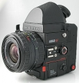

器材库 > 120中幅相机 > Rolleiflex 6008 AF

规格总览
产品类型
120中幅自动对焦SLR
发布日期
2002-03
标称画幅
6 x 6 / 6 x 4.5cm
后背
120, 220, Polaroid, 数码后背
取景规格
对焦屏
High-D高亮度对焦屏，可更换
反光镜锁定
有
景深预视
有
镜头和对焦
镜头卡口
Rollei M
镜头卡口类型
Rollei卡口，有10针电子触点(传输光阑和快门 数据)，即使使用皮腔、近摄接圈和反接接圈都能保持完整的曝光控制
对焦
AF-H感应器（三区感应），可使用旧款镜头，提供对焦指示
曝光控制
测光系统
多分区中央重点加权测光：测光元件在反光镜后，7个测光元件分成5组；中心点测光：3%；多点测光：最多5点；在测光和曝光过程中杂光自动补偿。
测光范围
0EV~19EV
曝光补偿
-42/3 ~ +2EV以1/3EV级调整
多重曝光
有
ISO感光度
25-6400
快门
电子控制镜间快门
快门速度
B, T, 30 - 1/1000秒
闪光同步速度
全同步：30 - 1/1000
闪灯控制
TTL测量胶片平面，独立SPD测光；填充闪光、充电完毕 ISO 25-1600；配合影楼灯可以预闪TTL测光
过片系统
过片
内置马达自动过片，单张/连续过片，最高2.5fps
其它规格
机身LCD显示
光圈，快门速度，A模式，S模式，曝光锁定，手动曝光补偿，测光特性，MF/指示，闪光检测/预闪，曝光补偿，画幅转换，拍摄张数，电池状态
接口
PC端子, 热靴, 快门线插孔, 三脚架接孔, 红外遥控, 14针万用插座
电池
可充电镍镉电池，可拍摄500张，快速充电；后备镍镉电池；汽车充电插头
机身尺寸
143x139x124mm
机身重量
1500g
机身+120后背+标准镜头+取景器尺寸
（含标准镜头）143x139x176mm
机身+120后背+标准镜头+取景器重量
（含标准镜头）2110g
羽毛伦2011-07-17 21:554.58 分
操作性 4.50功能性 5.00美观性 4.00趣味性 4.50耐用性 4.50性价比 5.00
6x6HJW2006-07-15 22:354 分
操作性 4.50功能性 4.50美观性 4.00趣味性 3.00耐用性 4.00性价比 4.00
轴外像差2006-03-11 17:05
飞吻大地2006-02-27 23:353.58 分
操作性 4.50功能性 4.00美观性 3.50趣味性 3.50耐用性 4.50性价比 1.50
leee2005-07-30 07:014.67 分
操作性 4.50功能性 5.00美观性 4.50趣味性 4.50耐用性 5.00性价比 4.50
歌台舞榭2005-03-27 04:374.33 分
操作性 4.50功能性 5.00美观性 4.50趣味性 4.50耐用性 4.00性价比 3.50
从容不迫2004-12-18 16:454.25 分
操作性 5.00功能性 5.00美观性 5.00趣味性 5.00耐用性 5.00性价比 0.50
葫芦洞主2004-05-16 04:184.58 分
操作性 5.00功能性 5.00美观性 4.00趣味性 5.00耐用性 4.00性价比 4.50
omo1232003-05-27 22:083.75 分
操作性 5.00功能性 5.00美观性 4.50趣味性 3.00耐用性 4.50性价比 0.50
Siokin2002-08-21 08:194.08 分
操作性 4.00功能性 4.50美观性 4.00趣味性 4.50耐用性 4.00性价比 3.50
产品图 / 样片
禄来 Rolleiflex 6008 AF
评测 / 相关文章
- 详细内容 （存档）